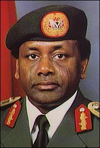

SANI ABACHA
- was a Nigerian military general who served as the military head of state of Nigeria from 1993 until his death
in 1998. He was also Chief of Army Staff between 1985 to 1990; Chief of Defence Staff between 1990 to 1993; and
Minister of Defence. In 1993, Abacha became the first Nigerian Army officer to attain the rank of a full
military general without skipping a single rank.
-
His rule saw the achievement of several economic feats and also recorded human rights abuses and several
politica assassinations.[2][3] He has been dubbed a kleptocrat and a dictator by several commentators.
-
In 1969, he fought during the Nigerian Civil War as a platoon and battalion commander. He later became
commander of the 2nd Infantry Division in 1975.[12] In 1983, Abacha was general officer commanding of the
2nd Mechanised Division, and was appointed a member of the Supreme Military Council.
-
The military career of Abacha was marked by involvement in all the military coups in Nigeria. When he
was still a second lieutenant with the 3rd Battalion in Kaduna, he took part in the July 1966 Nigerian
counter-coup from the conceptual stage.[14] He could well have been a participant in the Lagos or
Abeokuta phases of the coup the previous January as well.